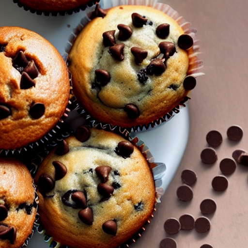

Muffins aux brisures de chocolat
Préparation: 10 minutes
Cuisson: 20 minutes
Total: 30 minutes
Ingrédients
-
1/3 t de beurre ramolli

-
2/3 t de sucre
-
2 gros oeufs
-
2 t de farine tout usage
-
2 c. à thé de poudre à pâte
-
1/2 c. à thé de sel
-
2/3 t de lait
-
1/2 t de brisures de chocolat mi-sucré
Instructions
Préchauffer le four à 205 °C (400 °F).
Réduire le beurre et le sucre en crème.
- 1/3 t de beurre ramolli
- 2/3 t de sucre
Ajouter 2 gros oeufs et fouetter jusqu'à ce que le mélange soit lisse.
Dans un petit bol, tamiser la farine, la poudre à pâte et le sel.
- 2 t de farine tout usage
- 2 c. à thé de poudre à pâte
- 1/2 c. à thé de sel
Ajouter en trois étapes, en alternant avec le lait, les ingrédients secs aux ingrédients humides. Ne pas trop mélanger.
Incorporer les brisures de chocolat et remplir les moules à muffins graissés aux 3/4.
Cuire à 400 °F pendant 18 à 20 minutes.